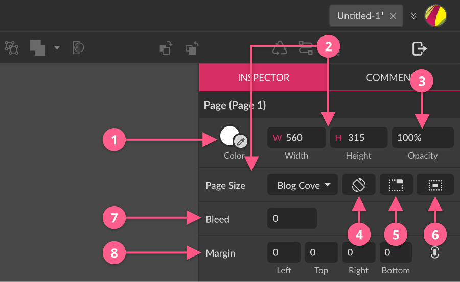
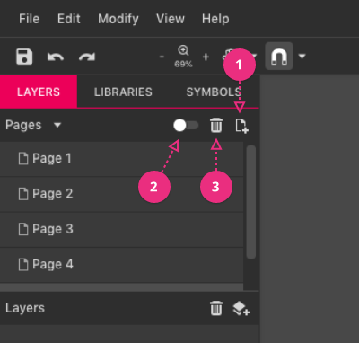
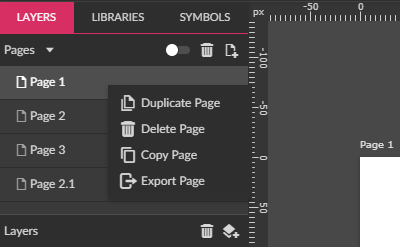
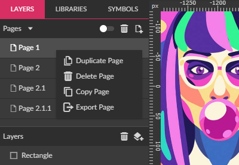
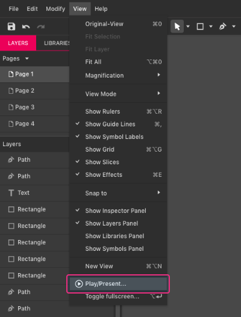
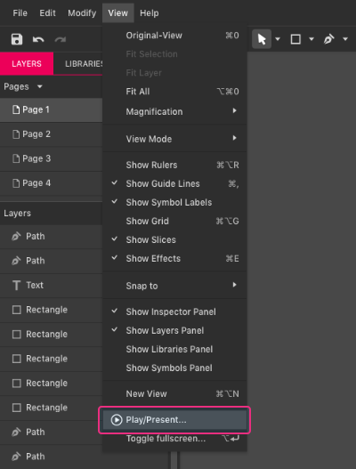

Pages let you define multiple canvas areas in the same document so you can organize your design in distinct chunks. You can export every page separately or in a multipage format, such as PDF. You can use separate pages to represent a variety of things: app screens, web pages, social media graphics, and pages from a print document.
Usually, pages have specific dimensions for width and height, but there is one exception — the infinite canvas page. It extends infinitely in both directions.
You can change the page size in the Inspector panel by typing new width and height values or choose a predefined size from the Page Size drop-down menu.
Every page can have its own background that can be a solid color, gradient, or texture. You can also change the opacity.
Page properties
When nothing else is selected in a document, Inspector panel shows properties for the current page canvas. You can manage all page properties.
Note: To deselect all objects, click on an empty area or use Deselect all command + +

Color (1)
The background color of the page. You can also adjust opacity, use gradient fills or texture (image) fills.
Size (2)
You can modify the size of the page. Values in the Width and Height fields are displayed in the document’s unit of measurement. Also, you can use Page Size presets drop-down, which has frequently used document sizes, such as social media graphics, device screen sizes and standard print sizes.
Note: If your page size uses real-world units for printing (inches, millimeters, or centimeters), you can use decimal values (for example, 7.5) as number values. You can do the same for online output using pixels as the unit, but output will only be displayed onscreen as full pixels.
If you want to re-use a project for both online display (pixels) or print, you can change the unit of measurement, which automatically changes the values in the size fields above.
Opacity (3)
You can change how transparent the canvas will be.
Orientation (4)
You can change the page orientation from portrait to landscape or the reverse. This switches Width and Height values without rotating the content of the design.
Trim Canvas (5)
You can trim the page size to fit the current content. If the content is larger than the canvas, the page will enlarge to fit the content. If the content is smaller than the canvas, the page will be trimmed to a rectangle that fits the content with no extra space. This is particularly useful if you want to use an image as the base for your design.
Import the image, then click the Trim Canvas icon. The size of your design will now match the image size.
CLIP CONTENT (6)
You can confine the elements currently present to the boundaries of the canvas, similar to a clipping mask. If this option is toggled on, anything placed outside the limits of the canvas won’t be visible. This feature can’t be used with Infinite Canvas.
Bleed (7)
You can define the bleed size in document’s units of measurement. For commercial print projects, pages are created at a larger-than-usual size. After binding, the slightly oversized rough page edges can be cut to size for perfect edge alignment. This extra space that will be cut away at the page edge is known as the bleed area. The Bleed area is not visible in the viewport.
Margins (8)
Margins are inset from the page size and form a visual part of the final output, while bleed adds an extra space around the output that will be cut from the final product. By default, margins are linked, so changing one changes them all. To modify margins individually, click the link icon to unlink them.
Page panel

You can create a new page with the same properties — such as size, background, margin — as the current page by clicking the Create New Page button on the top of the Pages panel (1).
To delete an active page click the Delete Active page button (3) or right-click the page name and choose Delete Page. All content and objects on the page will be deleted.

You can’t delete a page if it is the only one in the document.
Pages can be displayed in two modes. In Single mode, the default, only one active page is shown. In Multiple Page mode, all the pages are shown in a grid side by side. You can switch between the Single and Multi Page modes by pressing the switch on top of the Pages panel (2).
In the Multi Page mode, you can move and rearrange pages by clicking and dragging the page label.
Since version 2020-1.3.1, right-clicking a page name in the Pages panel displays a contextual menu with the following options:

- Duplicate Page: Duplicates selected page at the bottom of the page list with the suffix after the original page name. The page is duplicated along with all of its contents.
- Delete Page: Deletes selected page. If there is only one page it can’t be deleted.
- Copy Page: You can copy the selected page and paste it with CTRL+V in the same document, different document, or between Gravit Designer instances.
- Export Page: Opens the Advanced Export dialog with the current page preselected for exporting.
You can duplicate a page with the Duplicate Page option or follow these steps:
- Switch to multipage mode on the top of the Pages panel. All the pages present in the document will be shown on the screen side by side.
- Select the page you want to duplicate by clicking on its name label on top of the page in the viewport.
- Press + or .
- Alternatively, you can press + drag page label to duplicate
To rename a page, double-click its name in the Pages panel and type a new name.
You can also lock or unlock all objects on a page by clicking on the lock icon next to the page name. You can also hide a page by clicking on the show/hide (eye) icon next to the page name.
You can quickly Export any page by right-clicking it and choosing the Export Page.
Master pages
Setting a master page allows you to use another page’s content as a background for the currently selected page. Changes that you make on the master page are immediately visible on all other pages that use it.
For example, set up a master page with a standard letterhead or other decorative elements — headers, footers, side boxes For UI designs, create a base page, then on other pages, you can show additional overlay elements such as pop-up boxes and menus or elements states.
Quick presentation
Sometimes it can be useful to quickly present your ideas to the stakeholders. You can make a simple presentation using pages. Make each page a separate slide. Order the pages in Pages panel as you want them to appear in the presentation. Go to
 

The presentation starts in full-screen starting at the currently selected page in the document. You can move from slide to slide with arrow keys and exit with key.